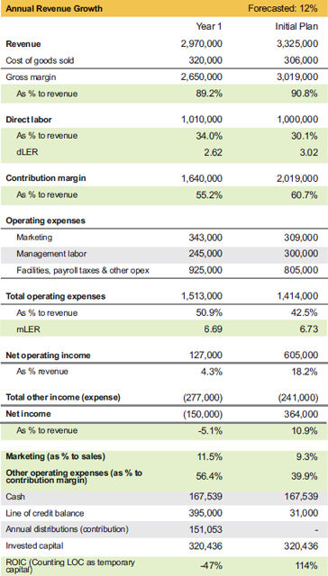

Recall the following ratios we have been using throughout this book:
We do not use revenue as a numerator, due to the pass-through nature of cost of goods sold (COGS). Since COGS can vary by business model and by customer interaction, using revenue as the numerator does not allow for accurate comparison. Gross margin is the first dollar you can spend internally; therefore, it is the true top line of your business and should be used to hold direct labor accountable for performance.
This brings up an interesting challenge for your sales team. They must focus on gross margin and contribution margin, not revenue. Otherwise they put unbearable pressure on your labor to perform without enough margin. I want my sales team to sell what we do best, not just sell anything they can and always default to price adjustments to win the deal. Granted, the sales team does not control labor, but they cannot ignore it in pricing and sell the impossible.
Management labor must focus on three variables:
Management is an active function, not simply a position. When someone wants to move from daily production to management, it is often code for wanting more money and authority over people, instead of the desire to commit to a management role. In the old days of layered management, these types of positions existed, but they were the first to get cut in a layoff. In today’s flat management structure, there is no place for passive management roles if the company wants to be a top performer.
How do you create a distinction between direct labor and management labor? I start by identifying the personnel who are direct labor, then management labor is everybody else. As long as your methodology is consistent, your data will be good. Beware of comparing your company to the industry as a whole or any benchmark data unless you know how the numbers are compiled. Your best guidance lies within your own data. Set your own performance standards instead of measuring yourself against someone who might be running a different strategy.
While you consider which staff members are direct labor, keep these points in mind:
Once you have identified direct labor, then everybody else is management labor, including administrative support personnel.
Case Study: Aspire to Serve Inc.
Now you know how to separate direct labor from management labor, so let’s look at a case study called Aspire to Serve Inc. (ATSi), with data set created from a blend of client experiences, and explore how to use LER.
In table 8.1, the first thing you notice about ATSi is they are right in the middle of the black hole I have mentioned before; that is, the journey between $1 million and $5 million in revenue, which is usually filled with the greatest challenges. At $3 million in revenue, ATSi must choose a key strategy: either stretch their team as far as they can and then backfill, or invest in labor ahead of growth and trust their sales process and access to debt or capital to fund that growth.
ATSi initial forecast

Most entrepreneurs have a tendency to grow their way out of their lack of profitability. We often refer to this as stage 1 of denial. Although growing is indeed a viable option to improve performance, experience tells us that most unprofitable businesses have some unproductive costs that need to be fixed first. Notice that I did not specifically say they need to cut costs. The amount they are spending for labor, or anything else, may be the correct amount; it may be that they are spending on the wrong source. A different person or vendor at the same cost might be more productive. My job is to educate entrepreneurs on their options, and they get to decide which approach they want to take.